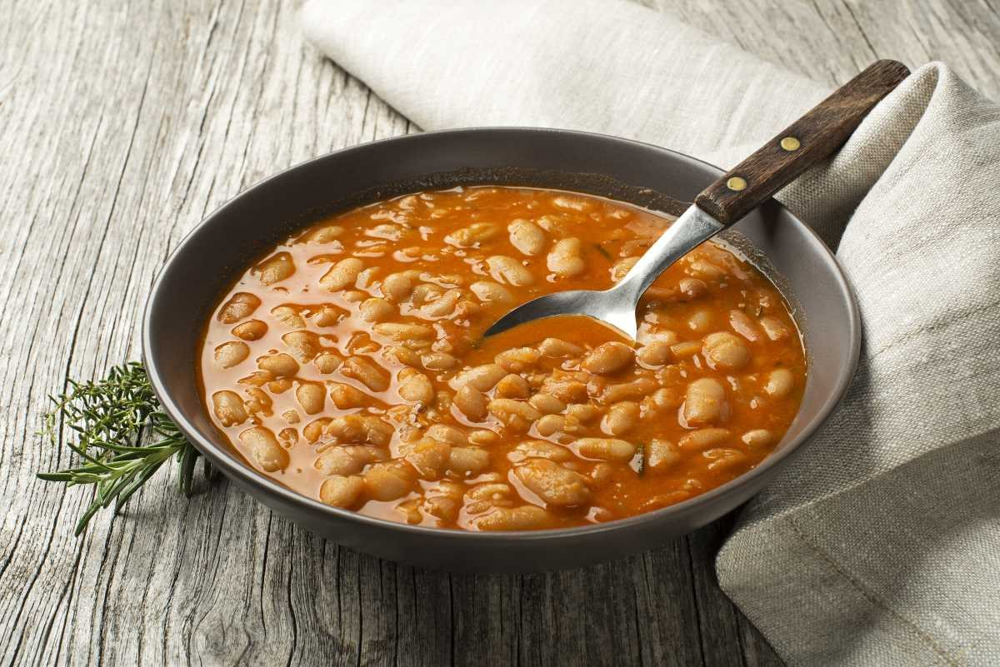

Back
Pasulj recipe

Description
Bean stew, slow-cooked with smoked meat and spices, perfect for warming up on cold days.
Ingridients
- 300g dried beans, soaked overnight
- 200g smoked meat, ribs or sausage
- 1 onion
- 1 carrot
- 1 tsp paprika
- salt, pepper, bay leaf
Steps
- Boil beans, discard the water, then cook with smoked meat in fresh water
- In pan, fry onions add paprika powder and flour
- Simmer until tender, season more if needed